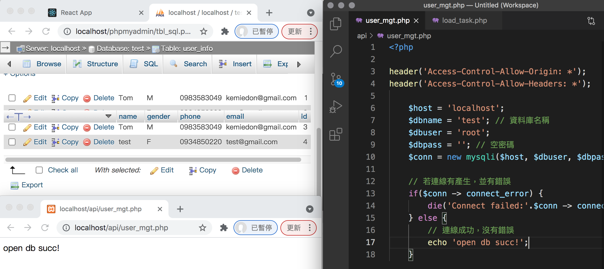
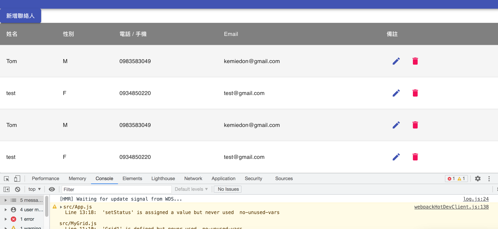
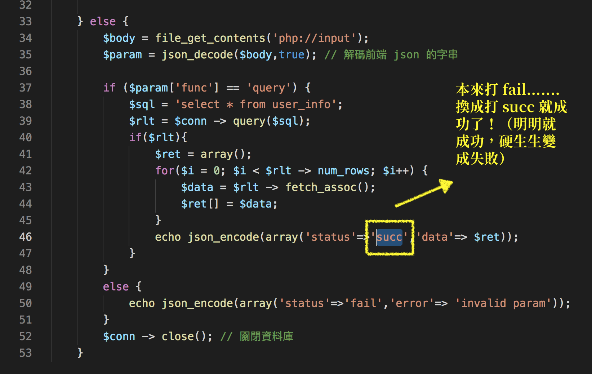

React
今天上課沒有講義，所以都沒做什麼筆記，主要是在做實作上的程式碼。
條件式渲染（condtitional render）
條件 && 元件，條件為 true 就產生 && 後的元件
很久沒有回歸 mysql 的懷抱惹！好久不見！要再好好花時間研究一下 php mysql 的資料庫語法，感覺有很多需要好好鑽研的部分！
下午最後一堂課不知為何資料一直繞不出來，結果晚上自己糾錯時發現....其實我有成功啊！只是我讓他印出 fail，所以他當然給我報 fail 了！（瘋掉），我改成 succ 就可以成功繞出來惹www 快被自己笨死。最後成功繞出！真有成就感！！！
 